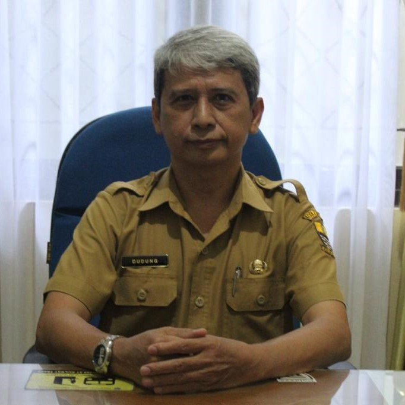
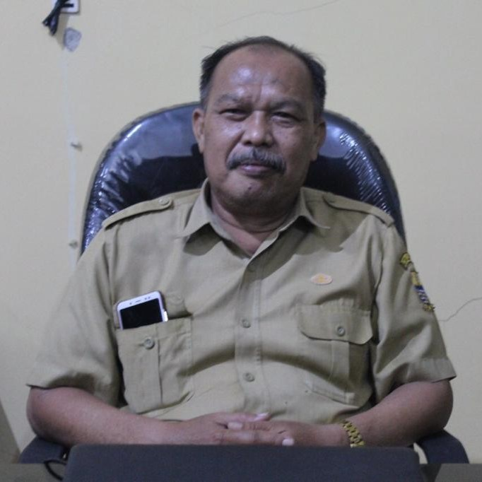

Yuk Liat Apa Saja Yang Ada Di Kecamatan Pekalipan
TENTANG KAMI
Haii Kamu Berada Di Kecamatan Pekalipan!
üåçSejarah
Tahun 1959 Wilayah Kota Cirebon terbagi dalam 4 Kecamatan yaitu :
-
KECAMATAN KOTA CIREBON UTARA,
KECAMATAN KOTA CIREBON SELATAN,
KECAMATAN KOTA CIREBON BARAT,
KECAMATAN KOTA CIREBON TIMUR.
tahun 1980 dibentuk kemantren Kecamatan Pekalipan yang kemudian pada Tahun 1986 berganti nama berdasarkan Peraturan Pemerintah Republik Indonesia Nomor 35 Tahun 1986 Tentang Pembentukan dan Perubahan Kecamatan di Kotamadya Daerah Tingkat II Cirebon menjadi 5 (Lima) kecamatan yaitu :
-
Kecamatan Kejaksan,
Kecamatan Kesambi,
Kecamatan Harjamukti,
Kecamatan Lemahwungkuk,
Kecamatan Pekalipan.
Adapun Wilayah Kecamatan Pekalipan terbagi menjadi 4 (Empat) Kelurahan dengan Luas Wilayah 1,56 km2 dan dibatasi dengan batas sebagai berikut :
-
Sebelah Utara berbatasan dengan Sungai Sukalila,
Sebelah Selatan berbatasan dengan Sungai Kriyan,
Sebelah Barat batas Kecamatan Kesambi,
Sebelah Timur batas Kecamatan Lemahwungkuk.
üåéKELURAHAN
Berikut Adalah Kelurahan Yang Berada Di Kecamatan Pekalipan
S T A F F
Kami Siap Membantu Masyarakat!
GANDI STTP, M.Si
C A M A T

DUDUNG ABDUL BARRY, SE
SEKERTARIS
DADAN SUNANDA, S.Sos
KASUBAG UMUM DAN KEPEGAWAIANROHAYATIN, SE
KASUBAG PROGRAM DAN KEUANGANWIWIN HERMAWATI, SE
SEKSI KETENTRAMAN DAN KETERTIBAN UMUM
